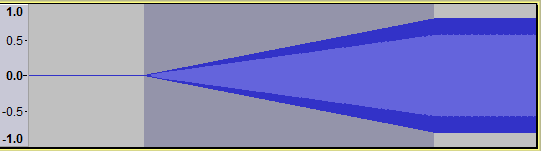
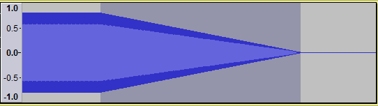
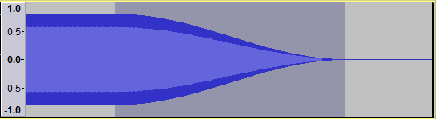
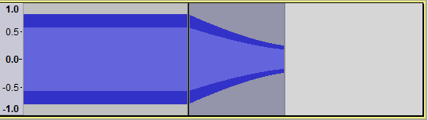

Fades
For more detail on fading please see Fade and Crossfade
Contents
Linear Fades
These basic fades apply a fade to the selected audio such that the amplitude of the selection goes from absolute silence to the original amplitude (Fade In), or from the original amplitude to absolute silence (Fade Out). The shape of the fade is linear, so it appears as a straight line from beginning to end (when viewed in the default linear Waveform View Mode). The speed of the fade in or out is therefore constant throughout its length and depends entirely on the length selected for the fade.
Fade In
- Accessed by:
- 
A fade in is often applied over a very short audio selection (less than a second). You may get a more "musical" result by applying a linear fade in three times to the same audio selection. This approximates an exponentially shaped fade in.
Fade Out
- Accessed by:
- 
A fade out is often applied to a longer selection than a fade in, typically to a selection up to about ten seconds long.
Studio Fade Out
- Accessed by:
Produces a smooth and "musical" sounding fade out from original volume to silence by applying a doubly-curved (S-shape) fade and fading out the higher frequencies a little quicker than the lower frequencies. It gives a "going off into the distance" type of sound rather than sounding like a "mechanical" fade out. This technique has found favor in recording studios for CD and LP tracks.
- 
Adjustable Fade
This has a dialog box where you can choose the shape of the fade in or fade out to be applied. You can also create "partial" fades to and from other than silence and original volume. An example of this might be a fade in from 20% of the original volume to 80% of the original volume. The "Handy Presets" at the bottom offer a choice of six pairs of fade in or fade out shapes, fading between silence and original volume.
- Accessed by:

| Choosing a preset disables all the other controls irrespective of their setting. Therefore to make a partial fade you must choose the Start and End values then use the other controls above to determine the fade shape and direction. |
Example of fading using Adjustable Fade
The image below shows the result of a partial fade down from original volume to 30%, applied to a the selected part of a constant amplitude sine tone. The shape is exponential (the fade down becomes slower with time), as produced by setting "Mid-fade Adjust" to a value of -50%.
- 
By using Adjustable Fade with different settings on different sections of the audio, almost any fade shape or combination of shapes can be produced, entirely using the keyboard.
Crossfades
While you can manually create a custom crossfrade using the fades on this page, the esiest way to make a crossfade between two tracks is to use on of the two crossfade effects available in Audacity.
- Crossfade Clips: This is a simple tool which crossfades between two adjacent clips in the same track.
- Crossfade Tracks: The second is a more precise tool that crossfades between two separate audio tracks. The tracks should be positioned one above the other, with the start of the lower track overlapping the end of the upper track. Select the overlapping region in both tracks and apply the effect. The selected region of the upper track will fade out, and the selected part of the lower track will fade in. For detailed information and advanced techniques see: Creating a Crossfade.